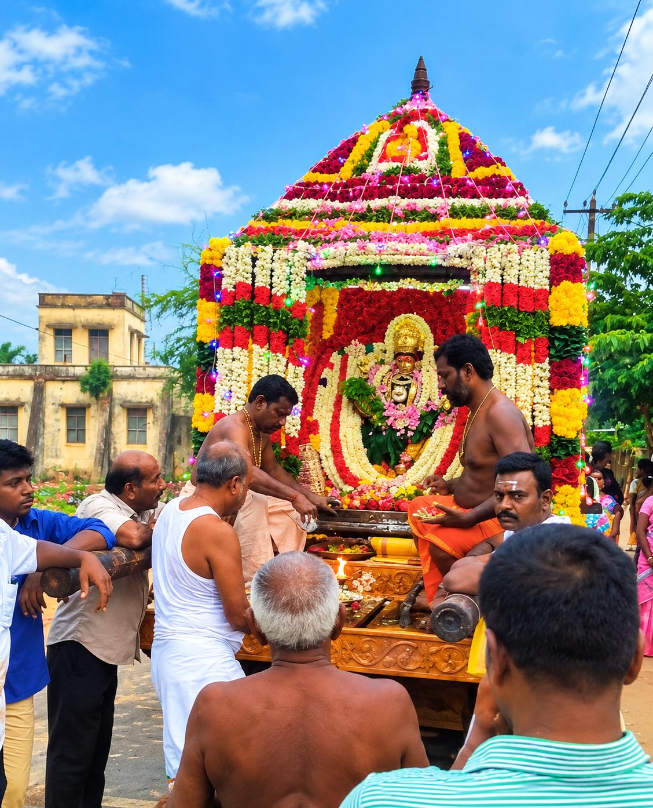
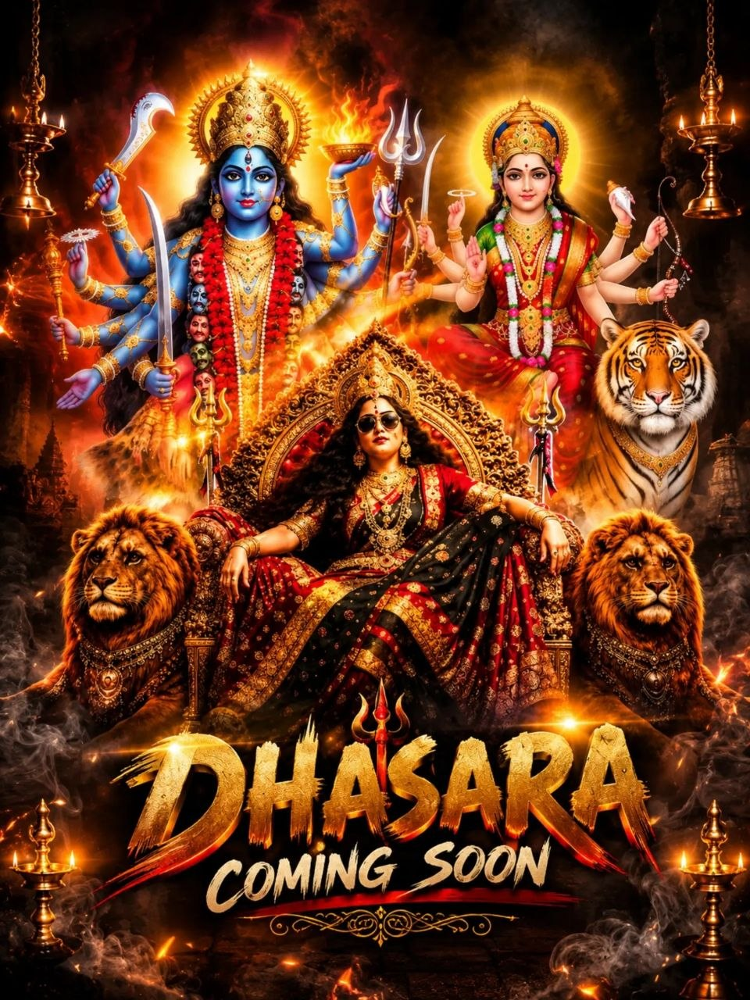
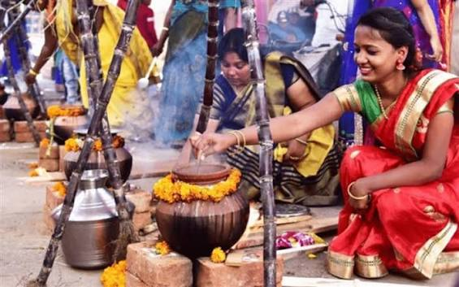
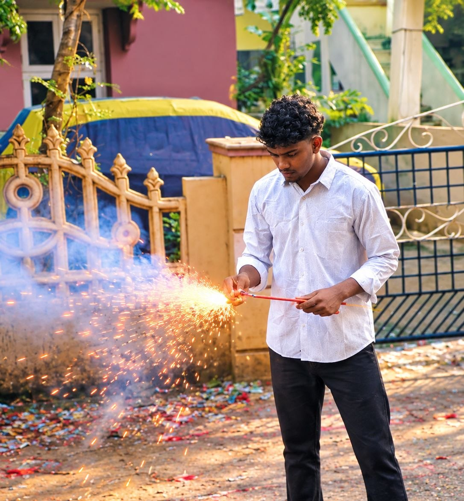

MAY
Kovil Kodai
கோவில் கொடை விழா — பக்தி, பாரம்பரியம் மற்றும் ஊர் மக்களின் ஒன்றுகூடல்.
நம் பாரம்பரியம் வாழும் இடம்; நம் மகிழ்ச்சி கூடும் நேரம்.

கோவில் கொடை விழா — பக்தி, பாரம்பரியம் மற்றும் ஊர் மக்களின் ஒன்றுகூடல்.

தசரா விழாவின் மகிழ்ச்சியையும் சிறப்புகளையும் கொண்டாடுவோம்.

தமிழர் திருநாளை மகிழ்ச்சியுடனும் நன்றியுடனும் கொண்டாடுவோம்.

ஒளியும் மகிழ்ச்சியும் நிறைந்த தீபாவளி நினைவுகள்.